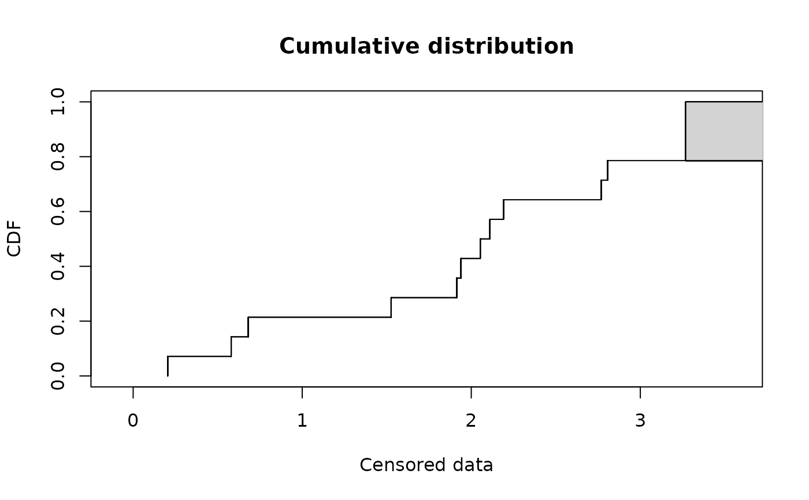
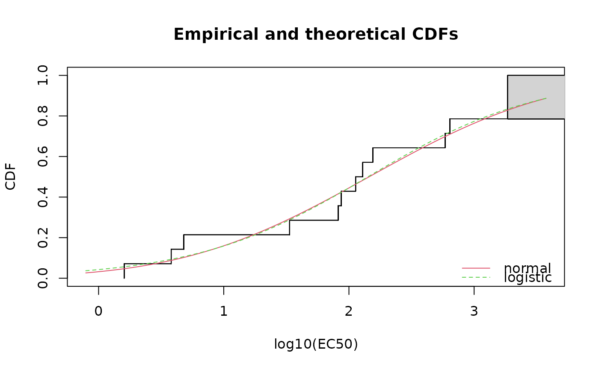

fluazinam.Rd48-hour acute toxicity values (EC50 values) for exposure of macroinvertebrates and zooplancton to fluazinam.
data(fluazinam)fluazinam is a data frame with 2 columns named left and right, describing
each observed EC50 value (in micrograms per liter) as an interval.
The left column contains either NA for
left censored observations, the left bound of the interval for interval censored
observations, or the observed value for non-censored observations. The right
column contains either NA for right censored observations, the right bound of
the interval for interval censored observations, or the observed value for noncensored
observations.
Hose, G.C., Van den Brink, P.J. 2004. The species sensitivity distribution approach compared to a microcosm study: A case study with the fungicide fluazinam. Ecotoxicology and Environmental Safety, 73, 109-122.
# (1) load of data
#
data(fluazinam)
# (2) plot of data using Turnbull cdf plot
#
log10EC50 <- log10(fluazinam)
plotdistcens(log10EC50)

# (3) fit of a lognormal and a logistic distribution to data
# (classical distributions used for species sensitivity
# distributions, SSD, in ecotoxicology)
# and visual comparison of the fits using Turnbull cdf plot
#
fln <- fitdistcens(log10EC50, "norm")
summary(fln)
#> Fitting of the distribution ' norm ' By maximum likelihood on censored data
#> Parameters
#> estimate Std. Error
#> mean 2.161449 0.3223366
#> sd 1.167290 0.2630390
#> Loglikelihood: -20.41212 AIC: 44.82424 BIC: 46.10235
#> Correlation matrix:
#> mean sd
#> mean 1.0000000 0.1350237
#> sd 0.1350237 1.0000000
#>
fll <- fitdistcens(log10EC50, "logis")
summary(fll)
#> Fitting of the distribution ' logis ' By maximum likelihood on censored data
#> Parameters
#> estimate Std. Error
#> location 2.1518291 0.3222830
#> scale 0.6910423 0.1745231
#> Loglikelihood: -20.55391 AIC: 45.10781 BIC: 46.38593
#> Correlation matrix:
#> location scale
#> location 1.00000000 0.05097494
#> scale 0.05097494 1.00000000
#>
cdfcompcens(list(fln,fll), legendtext = c("normal", "logistic"),
xlab = "log10(EC50)")

# (4) estimation of the 5 percent quantile value of
# the normal fitted distribution (5 percent hazardous concentration : HC5)
# with its two-sided 95 percent confidence interval calculated by
# non parametric bootstrap
# with a small number of iterations to satisfy CRAN running times constraint.
# For practical applications, we recommend to use at least niter=501 or niter=1001.
#
# in log10(EC50)
bln <- bootdistcens(fln, niter = 101)
HC5ln <- quantile(bln, probs = 0.05)
# in EC50
10^(HC5ln$quantiles)
#> p=0.05
#> estimate 1.743522
10^(HC5ln$quantCI)
#> p=0.05
#> 2.5 % 0.2358685
#> 97.5 % 11.5133957
# (5) estimation of the HC5 value
# with its one-sided 95 percent confidence interval (type "greater")
#
# in log10(EC50)
HC5lnb <- quantile(bln, probs = 0.05, CI.type = "greater")
# in LC50
10^(HC5lnb$quantiles)
#> p=0.05
#> estimate 1.743522
10^(HC5lnb$quantCI)
#> p=0.05
#> 5 % 0.3474539